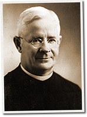

|
j
a v a s c r i p t |
September 8, 1942
The Tribune notes an increase in Manila's population: "Provincial traders flock to city ... Houses in demand." Truth is, the situation in the provinces is getting too hot. An article says 15 Spaniards (three families) escaping from Filipinos in Negros died when their sailboat sank en route to Manila.

Fr. Theo Buttenbruch
Had a long talk with Father Theo about how he gets medicines into the camps. He's not anti-Japanese and admits to meeting many fine Japanese officers. For all I know he may be putting a noose around his neck by insisting that the prisoners need and have a right to spiritual aid. He even lectured the Philippine Red Cross for their timid efforts by telling them that the world is living on physical suffering and they must take some risks for their principles. The reason he thinks 23,000 Filipino POWs died versus 1,500 Americans is that the former got worse treatment. The Americans forgave more quickly, had more open minds — the Japanese even got to like the American pats in the back and were surprised the Americans treated them as equals. The Americans worked harder, didn't quit and took everything dished out to them, earning the respect of the Japanese. To illustrate how the Japanese discriminate against the Filipinos, he related how on his last trip, there were some shirts left in the truck which the Japanese didn't allow to be distributed. An American engaged the Filipino driver and playfully grabbed a shirt. A Japanese officer observed the scene and became infuriated. Who did he slap? The Filipino driver! The Padre enjoys talking about his little successes: His favorite trick is to walk up to a Japanese guard, give him a Nazi salute, flash a Swastika flag, then walk through while the surprised guard is snapping to attention. Archbishop O'Doherty in his old Packard was once stopped near Cavite during a pastoral visit; even his Japanese altar boy couldn't help. Then Father Theo does his little trick and walks through — just like that. Once, when the priest and his goods were denied admittance to O'Donnell, he dealt out a few packs of cigarettes and a bottle of whiskey to an officer, and was promptly let in with best wishes. The Japanese are easily swayed by emotion, he said. The good priest has taken in many packages of medicines, including some I had bought from Gabby. After an inspection, he delivers them right to the camp doctors in front of the Japanese. The notes and money are stashed ingeniously in a small, concealed drawer at the bottom of his portable altar. He swaps this with the camp chaplain's and walks out with the outgoing notes. The Japanese don't bother to delve into the mysteries of the Catholic religion so it's pretty safe, he says. Among the many working in Manila to aid the American prisoners are the Franciscos, Elizaldes, Pirovano and others like McMicking, Sylvia, Melian, Mrs. Menzi, and even Berg from the Red Star, who has endured enough slappings and cuffings. |
|
|
|
|